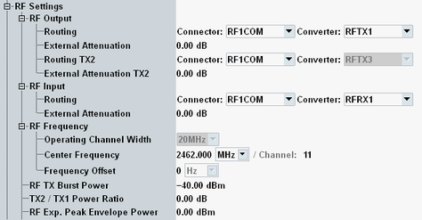

RF Settings (MIMO)
In the MIMO scenario, two downlink signals are generated and routed via different RF output paths. Compared to the SISO scenario, the RF output settings and the burst power settings are modified.

RF settings for MIMO
Compared to SISO, the RF output settings are duplicated for the two generated signals.
The two output paths must use different TX modules.
Remote command:This parameter is only available in the MIMO scenario. It defines the power of the second signal relative to the power of the first signal.
The "RF TX Burst Power" specifies the total power of both signals.
Remote command: